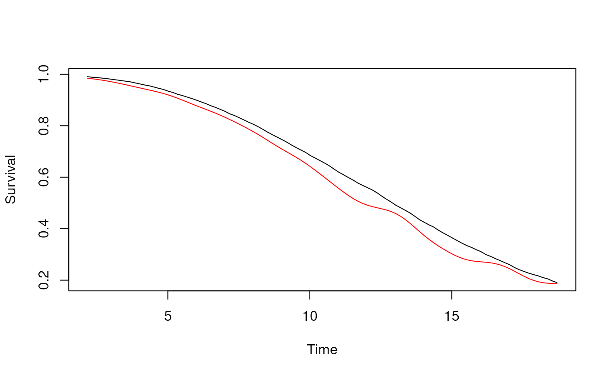

Let N denote the total number of patients and n the number of labeled patients. First, we generate a dataset of baseline features Z0 (here an N-dimensional vector but can be an N x p matrix consisting of p features), censoring times C, true event times T, current status labels Delta, binary filter indicators, and EHR features Z (here an N-dimensional vector but can be an N x p’ matrix of p’ EHR features) for N = 10,000 total patients.
sim <- function(N) { dat <- data.frame("ID" = 1:N) dat$Z0 <- runif(N, -1, 1) dat$C <- 10 * (rexp(N) * exp(-0.75 * dat$Z))^(2 / 3) dat$T <- 15 * (rexp(N) * exp(-0.75 * dat$Z))^(2 / 5) dat$X <- pmin(dat$T, dat$C) dat$Delta <- dat$T <= dat$C dat$filter <- as.logical(rbinom(N, 1, 0.98) * dat$Delta + rbinom(N, 1, 0.12) * (1 - dat$Delta)) dat$Zehr <- pmin(dat$T + rnorm(N, 0, 2), dat$C) return(dat) } N <- 10000 n <- 200 dat <- sim(N)
Next, we specify the range of timepoints t0.all at which to estimate survival as 100 equally spaced times between the empirical 10th and 90th percentiles of our simulated dataset’s censoring times C. We then run SCORNET.
t0.all <- seq(quantile(dat$C, .1), quantile(dat$C, .9), length.out = 100) t1 <- proc.time() scornet_est <- scornet( Delta = dat$Delta[1:n], C = dat$C[1:n], t0.all = t0.all, C.UL = dat$C[-c(1:n)], filter = dat$filter[1:n], filter.UL= dat$filter[-c(1:n)], Z0 = dat$Z0[1:n], Z0.UL = dat$Z0[-c(1:n)], Zehr = dat$Zehr[1:n], Zehr.UL = dat$Zehr[-c(1:n)] ) t2 <- proc.time()
Plots of the true survival function (black) and SCORNET’s estimator thereof (red):
tmp <- sapply(t0.all, function(t) { mean(dat$T > t) }) plot(t0.all, tmp, xlab = "Time", ylab = "Survival", col = "black", type = "l") lines(t0.all, scornet_est$S_hat, col = "red", type = "l")

Plot of SCORNET’s Wald standard error estimator over time:
plot(t0.all, scornet_est$StdErrs, type = "l", xlab = "Time", ylab = "Wald Std. Err.")
Time elapsed:
print(t2 - t1)
## user system elapsed
## 7.363 0.088 7.466